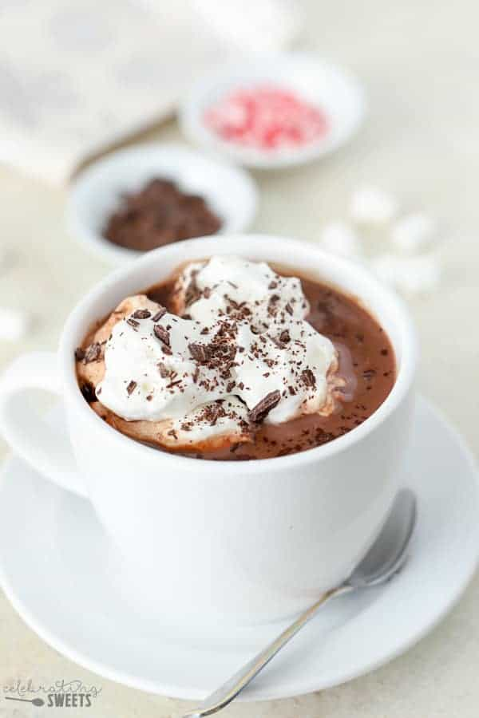

Hot Chocolate

Description:
With winter coming around, it is time to brush up hot
chocolate making skills with this recipe.
Ingredients:
- 3 tablespoons cocoa powder, plus more for serving
- 3 cups whole milk
- 6 unces semisweet chocolate, finely chopped
- 3 tablespoons demerara or granulated sugar
- whipped cream (for serving)
Steps:
- Bring ¾ cup water to a simmer in a medium saucepan over medium-high heat.
Whisk in 3 Tbsp. cocoa powder until no lumps remain, then add milk and return to a
simmer. Whisk in chocolate and sugar and cook, whisking frequently, until mixture
is smooth and creamy and chocolate is melted, about 5 minutes.
- Divide hot chocolate among mugs. Top with whipped cream and dust with cocoa powder.